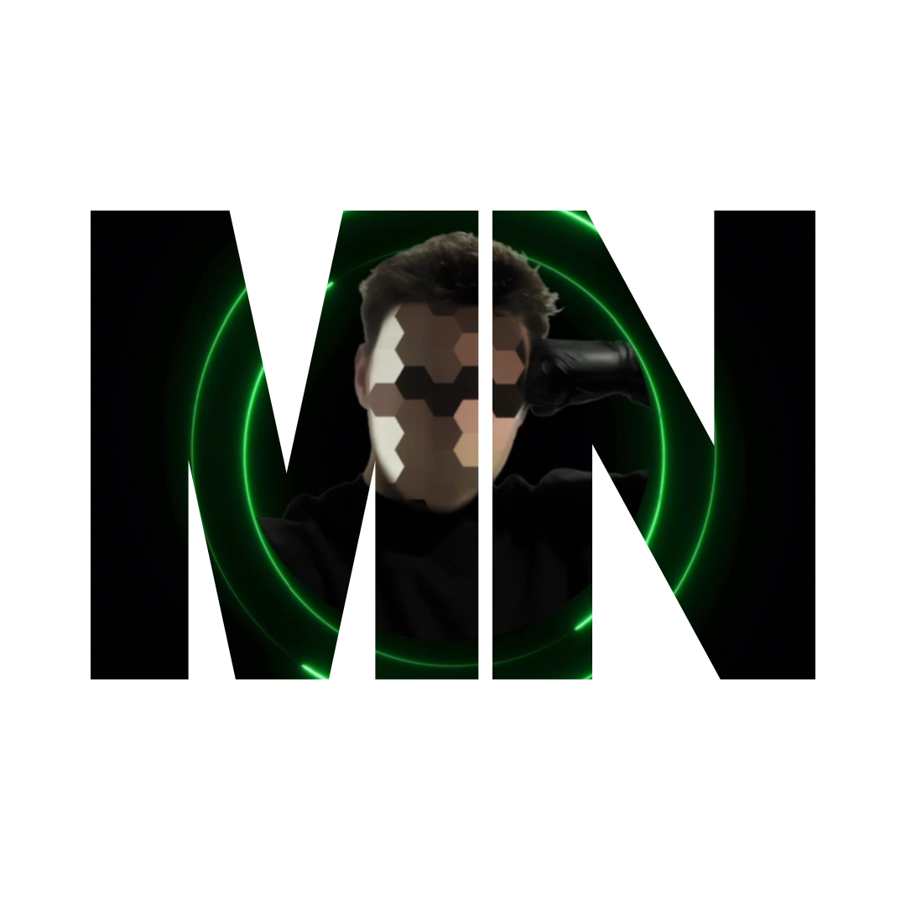
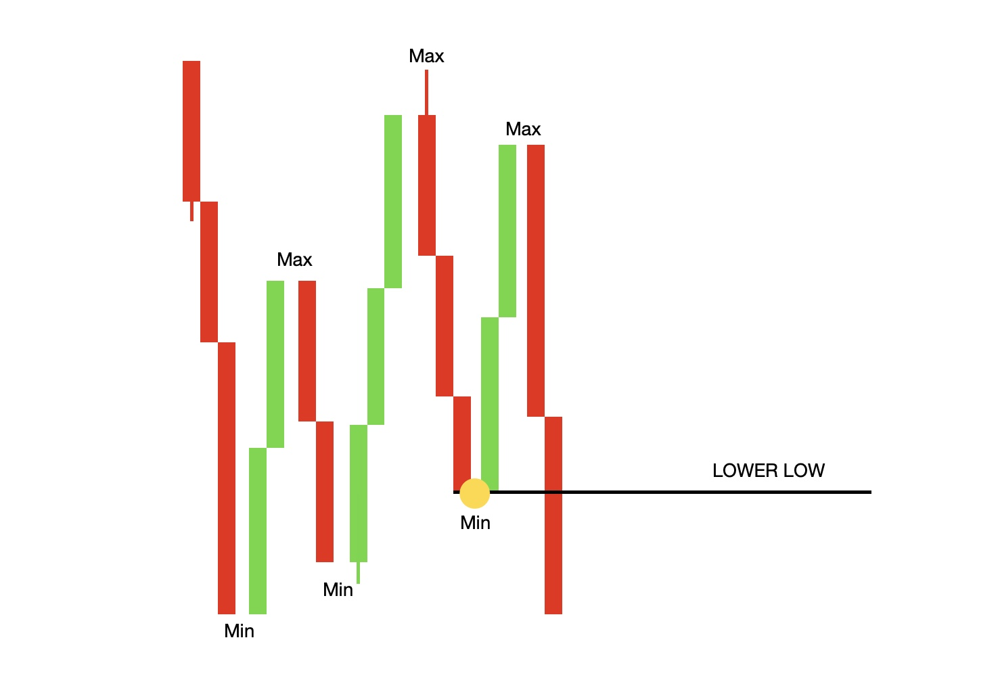

BENVENUTO NEL CORSO BASE
IN QUESTO CORSO TROVERAI:
♦ PSICOLOGIA DA TRADER♦ GLI ERRORI PIU COMMESSI NEL TRADING
♦ INDICATORI
♦ STRATEGIE DI BREVE E MEDIO TERMINE
♦ CORSO GRATUITO SULLE CRYPTO
♦ VIDEO/ IMMAGINI
♦ SALA SEGNALI
♦ INDICATORI
♦ METODI DI GUADAGNO NEL MONDO CRYPTO
♦ INVESTIMENTI LONG TERM
♦ SUPPORTO IN CHAT PUBBLICA PRIVATA
♦ STORIA DI BITCOIN
♦ EXCHANGE
accedi ai video

EXCHANGE
Se non hai ancora un account, ti invito a registrarti ora in una o piu di queste piattaforme.Registrandoti con questi link hai il -20% sulle Fee
Binance Bybit Kucoin
Metamask
Per registrarti su MetamaskScarica Ora
♦ SCARICARE METAMASK
♦ ANDARE SU:
IMPOSTAZIONI /NETWORK / ADD NEW NETWORK / CUSTOM NETWORK / E COPILARE I MODULI.
♦NETWORK NAME: SMART CHAIN
♦RPC URL: htt://bsc-dataseed.binance.org/
♦CHAIN ID: 56
♦SYMBOL: BNB
♦BLOCK EXPLORER URL: https://bscscan.com

Materiale
♦Trading View: Analisi tecnica♦CoinMarketCap: Andamento di varie piattaforme crypto
♦Dex Tools: Permette di vedere grafici delle coin che non sono listate sugli exchange ma solo sui dex
♦Defi Llama: Tenere sotto controllo la defi classifica piattaforme + usate, e la loro TVL
♦Investing.com: Aggiornamenti e news
Investing.com Download

Analisi Tecnica
Analisi Tecnica Base:TREND RIALZISTA:
Massimi e minimi più alti del precedente.
TREND RIBASSISTA:
Minimi e massimi inferiori al precedente.

Figure Di Inversione

Figure Di Continuazione

Inversione Del Trend
L’inversione viene creata con la conferma del minimo inferiore al precedente e max inferiore al precedente.Conferma definitiva quando rompe il lowerlow.



Greed Fear Index
PARTIAMO CON IL DIRE:COMPRARE IN ESTREAM FEAR(PAURA ESTREMA)
VENDERE IN EXTREAM GREED(AVIDITA ESTREMA)
E UN INDICATORE CHE MISURA DUE EMOZIONI PRIMARIE CHE INFLUENZANO GLI INVESTIMENTI QUANTO PAGARE PER LE AZIONI.
COMPRARE QUANDO IL MERCATO SCENDE
VENDERE QUANDO IL MERCATO SALE
DOWNLOAD GREED/FEAR INDEX


COME FARE UN TRADING PLAN?
- SITUAZIONE DI MERCATO:
dove volete operare impulsi ritracciamenti.
-SETUP
esempio a me piace quando entra nella mia zona golden di fibonacci.
-ENTRY
che conferme cercate per entrare esempio quando si forma un determinato pattern.
-STOP
i stop non si mettono a caso esempio preferisco metterlo sotto i minimi precedenti.
- TARGET
qualsiasi cosa che piace a voi esempio livelli chiave.
-RISK MANAGEMENT
quanto volete rischiare
-CALENDARIO ECONOMICA
stare attenti alle notizie importanti
QUESTI SONO I PRINCIPALI PUNTI SU CUI SI DEVE FONDARE IL VOSTRO TRADING PLAN
A COSA SERVE IL TRADING PLAN?SERVE AD OPERARE CON DELLE REGOLE, SENZA REGOLE SICURAMENTE ANDRETE A PERDERE SOLDI.